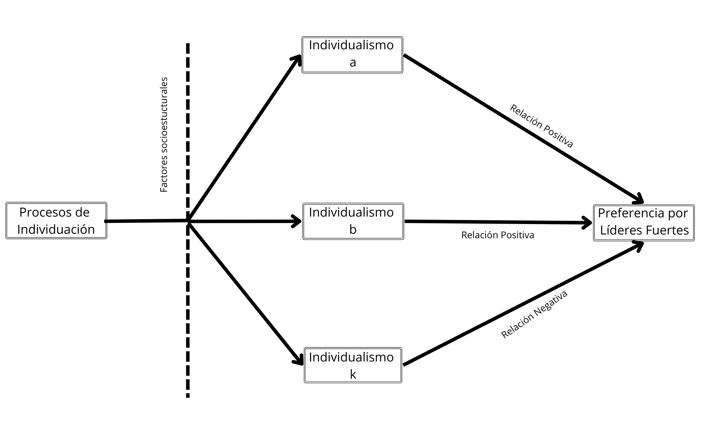

![]()

Perfiles de Individualismo en la sociedad chilena
Resumen
Escribir
Palabras clave
Individualismo, Individuación, Análisis de clases latentes
Antecedentes
El presente trabajo busca explorar la relación entre los perfiles de individualismo y el apoyo a un líder fuerte en la sociedad chilena. En un contexto político que, tanto a nivel nacional como internacional, los liderazgos autoritarios y populistas cobran mayor relevancia, esta investigación se centra en entender como divergencias en los procesos de individuación pueden estar asociados con formas de ejercer el poder que se alejan del ideal democrático y representativo. De tal modo, esta investigación se propone arrojar luz sobre las consecuencias políticas del individualismo, en sus distintas expresiones, en la sociedad chilena.
En los últimos años ha sido posible observar varios indicadores que apuntan hacia una disminución en el apoyo de los chilenos a la democracia (CEP 2023), sumado a un aumento en las preferencias por opciones populistas o autoritarias (CADEM 2023; CERC-MORI 2023; Díaz, Rovira Kaltwasser, y Zanotti 2023), así como un profundo distanciamiento entre élites políticas y la ciudadanía (Luna 2016). En este contexto, resulta plausible que surjan tendencias que aboguen por liderazgos fuertes capaces de cumplir con eficacia las demandas de los ciudadanos, incluso a expensas de respaldar soluciones autoritarias o no-democráticas (Carlin 2018).
Por supuesto, la disminución del apoyo a la democracia y el surgimiento de opciones autoritarias o populistas no es un fenómeno únicamente local, y ha sido estudiado ampliamente en varias regiones del mundo bajo diversas etiquetas, tales como liderazgos fuertes, no-democráticos o delegativos (Carlin 2011, 2018; Crimston, Selvanathan, y Jetten 2022; Kang y Lee 2018; Lima et al. 2021; Selvanathan, Crimston, y Jetten 2022; Xuereb et al. 2021), populismos (Baro 2022; Gidron y Hall 2020; Nowakowski 2021), o derecha populista radical (Díaz, Rovira Kaltwasser, y Zanotti 2023; Donovan 2019, 2021). También se han puesto esfuerzos en identificar sus determinantes, entre los que se pueden contar factores culturales (Lima et al. 2021; Marchlewska et al. 2022; Selvanathan, Crimston, y Jetten 2022); factores económicos objetivos y subjetivos (Arikan y Sekercioglu 2019; Rico, Guinjoan, y Anduiza 2020; Wu y Chang 2019; Xuereb et al. 2021); el bajo bienestar o estatus subjetivo (Gidron y Hall 2020; Nowakowski 2021); sentimientos de anomia y de polarización moral (Crimston, Selvanathan, y Jetten 2022); la pertenencia a una minoría étnica o religiosa con baja integración nacional (Eskelinen y Verkuyten 2020); así como rasgos personales como el narcisismo (Marchlewska et al. 2019), la autoeficacia (Rico, Guinjoan, y Anduiza 2020) o el privilegiar los valores de conservación (Baro 2022).
En este contexto, es relevante destacar que existen algunos estudios que han explorado la relación entre distintos modelos de democracia, preferencias o actitudes políticas y el espectro Individualismo-Colectivismo. Bajo el enfoque popularizado por Geert Hofstede en la década de 1980, Individualismo y Colectivismo representan dos extremos de un continúo que permite diferenciar entre diversas culturas (Oyserman, Coon, y Kemmelmeier 2002). En sociedades individualistas, se espera que los individuos asuman la responsabilidad de sus propias vidas y las de sus familias, mientras que las culturas colectivistas se caracterizan por la existencia de sólidos lazos de interdependencia entre sus miembros (Yoon 2010).
Bajo este enfoque, se ha observado que, entre estudiantes universitarios estadounidenses, el individualismo y el colectivismo son dimensiones ortogonales, con el primero ubicado en el polo opuesto al autoritarismo (Gelfand, Triandis, y Chan 1996). Por otro lado, en una serie de estudios comparativos realizados en varios países, estos hallazgos se han complejizado al encontrar una asociación positiva entre el autoritarismo y el individualismo vertical, que privilegia la competencia y la jerarquía entre individuos, pero no con el individualismo horizontal, que fomenta la unicidad y la igualdad (Kemmelmeier et al. 2003). Asimismo, se ha observado que el individualismo vertical está relacionado con orientaciones de dominancia social (Strunk y Chang 1999) y con el voto conservador en los Estados Unidos (Zhang, Nelson, y Mao 2009). Además, se ha argumentado que las culturas individualistas promueven una mejor gobernanza al desincentivar la corrupción, el nepotismo y el clientelismo (Kyriacou 2016).
Sin embargo, estos estudios son escasos y comparten ciertas limitaciones. Estas investigaciones suelen restringir las definiciones de individualismo y colectivismo a un nivel puramente cultural, sin adentrarse en el análisis de posibles divergencias dentro de una misma sociedad. Además, ninguno de estos estudios ha explorado estos fenómenos en el contexto chileno o en América Latina.
De tal modo, considerando las consecuencias políticas (Zhang, Nelson, y Mao 2009), sociales (Strunk y Chang 1999) y económicas (Kyriacou 2016) que se derivan de la asociación entre el individualismo y las actitudes o preferencias políticas, se plantea la necesidad de emprender una investigación que aborde las brechas antes mencionadas. Para lograrlo, y como se argumentará en detalle más adelante, se incluirá un giro en la conceptualización de individualismo, que busca pasar a entenderlo como el resultado de procesos sociohistóricos de individuación que difieren no solo entre culturas, sino también dentro de una misma sociedad (Martuccelli 2018).
La individuación es un fenómeno sociohistórico que provoca cambios en la manera en que los individuos se relacionan con las figuras de autoridad (Araujo 2021). Por ello, parece interesante indagar cómo diferentes variantes de individualismo – resultado de divergencias de los procesos de individuación – podrían relacionarse con la pérdida de legitimidad de modalidades democráticas de autoridad, privilegiando, por ejemplo, liderazgos percibidos como más fuertes, eficientes (Araujo et al. 2022; Araujo 2022), o auténticos (Gauthier 2021). En visto de todo lo planteado, este artículo se propone como objetivo el establecer la relación entre el apoyo a un líder fuerte y los distintos perfiles de individualismo en la sociedad chilena.
A continuación, se presentará un marco teórico donde se definirán ambos conceptos centrales de esta investigación. Luego, se expondrá la estrategia metodológica propuesta, que incluirá la presentación de la muestra, los indicadores y las técnicas de análisis utilizadas. Posteriormente, se procederá a mostrar los principales hallazgos del estudio, identificando los perfiles de individualismo y estableciendo su relación con el apoyo a un líder fuerte. Estos resultados serán luego discutidos a la luz del modelo teórico presentado. Finalmente, el documento cerrará con algunas reflexiones sobre las limitaciones de esta investigación, así como con las perspectivas que deja abiertas.
Marco Teórico
Apoyo a un Líder Fuerte
Se entenderá el apoyo a un Líder Fuerte como la demanda, por parte de los ciudadanos, de que el poder político esté concentrado en un líder, ejerciéndolo de manera personalista, con poco o nulo contrapeso por parte de otras instituciones o actores. Pese a que este tipo de liderazgos se han considerado como más comunes en regímenes autoritarios (Kendall-Taylor, Frantz, y Wright 2017), durante las últimas décadas se ha observado su auge también en democracias liberales consolidadas (Lindstaedt 2021; Kendall-Taylor, Frantz, y Wright 2017).
Se ha propuesto que este tipo de liderazgo tiene mayores posibilidades de aparecer en contextos negativos o de incertidumbre, donde un líder fuerte suele ser percibido como una solución a problemas políticos o económicos (Harms et al. 2018). El ascenso al poder de este tipo de líderes se ha asociado a una mayor polarización, así como de procesos de concentración del poder y de deterioro democrático (Lindstaedt 2021; Brunkert y Von Soest 2023; Kendall-Taylor, Frantz, y Wright 2017). Pese a ello, el apoyo a este tipo de liderazgo ha crecido a lo largo del mundo, y una parte importante de la literatura se ha dedicado a comprender los factores de esta tendencia. Entre algunas explicaciones que se han esbozado se cuentan rasgos de la personalidad como la mentalidad cerrada o la introversión (Armendariz Miranda y Cawvey 2021), la incertidumbre identitaria (Hogg 2021; Hogg y Adelman 2013), el deseo por continuar la identidad nacional (Selvanathan, Crimston, y Jetten 2022), la desigualdad económica (Sprong et al. 2019) y la baja confianza interpersonal (Xuereb et al. 2021).
Además, se ha indicado que el apoyo a un líder fuerte se encuentra asociado a la llamada personalidad autoritaria (Harms et al. 2018). Particularmente, los autoritarios estarían más dispuestos a renunciar a su autonomía personal frente a autoridades percibidas como dominantes (Harms et al. 2018). En la misma línea, se ha planteado que el individualismo no es tanto el opuesto al colectivismo, sino del autoritarismo (Gelfand, Triandis, y Chan 1996). De tal modo, existe una tendencia en la literatura a asociar negativamente al individualismo con actitudes autoritarias, planteando más bien una relación con el apoyo a las variantes más liberales y representativas de democracia. Pese a ello, también se ha encontrado evidencia empírica que apunta a la asociación entre el individualismo con el conservadurismo (Zhang, Nelson, y Mao 2009), el autoritarismo (Kemmelmeier et al. 2003) y la dominancia social (Strunk y Chang 1999). De tal modo, el panorama general sugiere que la relación entre individualismo y democracia está lejos de ser unívoca.
Frente a lo anterior, en la siguiente sección se presentará la propuesta teórica de esta investigación. La apuesta aquí es que la sociología del individuo entregaría las herramientas necesarias para comprender las relaciones divergentes entre el individualismo y los tipos de liderazgos demandados por la ciudadanía.
Individualismo
El fenómeno del individualismo ha sido principalmente investigado desde la psicología cultural, con un enfoque especial en la comparación entre distintas culturas. Desde esta perspectiva, de tal modo, se tienden a categorizar sociedades y países ya sea como individualistas o como colectivistas. Las sociedades individualistas se caracterizarían por lazos poco estrechos entre individuos, de quienes se espera se hagan cargo de sí mismos y de su familia inmediata. Las sociedades colectivistas, en tanto, se definen porque sus miembros están integrados desde su nacimiento a grupos fuertemente cohesionados que los protegen a lo largo de sus vidas a cambio de una lealtad incuestionable (Yoon 2010).
Esta conceptualización de individualismo-colectivismo ha sido criticada por su falta de claridad conceptual (Oyserman, Coon, y Kemmelmeier 2002), su uso como un concepto catch-all, que se utiliza por defecto para explicar diferencias culturales (Voronov y Singer 2002) y que esconde una dimensión normativa que asocia el individualismo a la modernidad y al desarrollo (Voronov y Singer 2002; Wang y Liu 2010; Martuccelli 2010; Moemeka 1998). Brewer y Chen (2007) además, indican que no hay una verdadera simetría en la forma en que se operacionalizan el individualismo y el colectivismo, pues, mientras que los ítems utilizados para medir el individualismo suelen centrarse en la identidad y la agencia de los individuos, el colectivismo se suele medir como un sistema de valores.
Estas limitaciones se expresan en “anomalías” observables en varios de estos estudios, como que los individualistas pueden ser tanto o más colectivistas que los colectivistas mismos (Oyserman, Coon, y Kemmelmeier 2002), o que en determinados contextos los colectivistas actúan de manera individualista (Voronov y Singer 2002). A nivel agregado, Chile podría considerarse como un claro ejemplo de estas contradicciones: Bajo la definición de Hofstede, la sociedad chilena ha sido clasificada como colectivista (Rojas-Méndez et al. 2008). Esto concuerda con observaciones que han señalado que el colectivismo en Chile es alto, tanto si se mide como el opuesto al individualismo (Oyserman, Coon, y Kemmelmeier 2002) o entendido como un self-construal interdependiente (Benavides y Hur 2020). No obstante, también es cierto que los niveles de individualismo observados en el país llegan a ser incluso más altos que aquellos obtenidos en sociedades típicamente individualistas, como Estados Unidos (Oyserman, Coon, y Kemmelmeier 2002) o Noruega (Kolstad y Horpestad 2009).
Esto abre la pregunta de si Chile realmente es una sociedad colectivista, y si no lo es, ¿hasta qué punto es una sociedad individualista? La propuesta de esta investigación es que, con el fin de responder esta pregunta, es necesario dar un giro hacia una perspectiva teórica que provea el lenguaje para describir el individualismo chileno. En concreto, se conceptualizará el individualismo desde la sociología del individuo desarrollada por Danilo Martuccelli. Desde este enfoque, tanto en su obra individual (Martuccelli 2010, 2018), como en colaboración con Kathya Araujo (Araujo y Martuccelli 2014, 2020a, 2012), Martuccelli ha hecho esfuerzos contundentes para describir la forma particular del individualismo en Chile y América Latina.
Martuccelli (2010) argumenta que la representación del individuo que se volvió hegemónica para la modernidad es un individuo que es soberano en al menos dos acepciones. En primer lugar, porque se espera de este que sea dueño de sí mismo, de manera independiente, autónoma y singular. En segundo lugar, porque es un ente racional capaz de legitimar el orden social y la soberanía colectiva.
Este individuo se encuentra en el vértice de un modelo de representación de la vida social que lo sitúa en el centro del pacto social (Martuccelli 2010, 2018). Este modelo es lo que comúnmente se entiende como individualismo. Martuccelli (2018) denomina a esta variante del fenómeno como individualismo institucional, caracterizado por una separación radical entre holismo e individualismo, una concepción atomizada del individuo y la preminencia del rol de las instituciones en los procesos de individuación.
Las divergencias respecto a este modelo, observadas en otras regiones del mundo, a menudo ha llevado de la negación existencia de individuos, individualización e individualismo en éstas (Martuccelli 2010). En cambio, abordar el fenómeno del individualismo desde la sociología del individuo permite desembarazarse de estas conceptualizaciones unívocas. Frente a ello, se propone una definición que permita teorizar el fenómeno para la sociedad chilena.
Se entenderá así como individualismo a los modelos de representación de la vida social que definen el rol del individuo en la sociedad. Bajo tales modelos, los individuos deben hacerse cargo de sus propias vidas en condiciones diversas de a) legitimidad de la acción individual, b) distintas representaciones culturales y autoconcepciones del individuo, y c) diferentes valores e imperativos estructuralmente producidos.
La legitimidad de la acción individual hace referencia a las creencias sobre la agencia de los individuos en el mundo social (Brewer y Chen 2007) y la legitimidad de acciones individualizadas en las esferas de la economía, la política y las emociones (Cortois y Laermans 2018). Una mayor legitimidad de la acción individual se relaciona a una mayor valoración de la individualidad, la cual se define como el “grado de diferenciación o de singularización reconocido o legítimamente alcanzado por un individuo dentro de un colectivo” (Martuccelli 2018, 10).
Bajo el modelo del individualismo institucional, la individualidad deja de ser una anomalía para pasar a ostentar altos niveles de legitimidad (Martuccelli 2018). Sin embargo, esto se vería tensionado, por ejemplo, por la acentuación de conductas individualizadas sin ruptura de lazos comunitarios en sociedades africanas, modelo que Martuccelli (2018) denomina como individualismo comunitario. Más cercano a la realidad nacional, Araujo y Martuccelli (2020b) constatan que la individualidad ha sido históricamente vista con sospecha en sociedades latinoamericanas.
Ahora bien, se debe resaltar que el individualismo ha sido institucionalizado principalmente en 3 esferas: la económica, la política y la afectiva (Cortois y Laermans 2018; Martuccelli 2018). Esto se refleja en la existencia de 3 guiones para el individualismo institucional; en la esfera económica, un individualismo utilitario que legitima la acción individual estratégica, poniendo medio sobre fines; en la política, un individualismo moral que enfatiza la obligación de tratar al otro como un fin en sí mismo; y en la afectiva, un individualismo expresivo en que la acción social se entiende como un medio para la expresión auténtica del yo (Cortois y Laermans 2018).
Las autoconcepciones del individuo, por otro lado, abordan las diversas concepciones en torno a las que se pueden definir las identidades de los individuos en relación a sus grupos de referencia (Brewer y Chen 2007).
La concepción independiente es aquella en que el individuo se concibe como un ente atomizado y prexistente a sus lazos sociales. Aunque esta concepción se ha considerado como propia de las culturas individualistas (Benavides y Hur 2020; Cross, Hardin, y Gercek-Swing 2011), tal idea ha sido problematizada teórica (Voronov y Singer 2002) y empíricamente (Benavides y Hur 2020; Kolstad y Horpestad 2009). Además, la persistencia de los llamados valores asiáticos en esas sociedades, que conceptualizan al individuo como inseparable de sus lazos sociales (Zhai 2022), y la conceptualización de un híper-actor relacional en la sociedad chilena (Araujo y Martuccelli 2020a), sugieren la posibilidad de individualismos que difieren de las concepciones independientes.
De tal modo, se podrían identificar, además, concepciones relacionales y concepciones colectivas (Brewer y Chen 2007). En las primeras, la identidad del individuo se define por sus relaciones cercanas, tales como la familia o los amigos. En las segundas, en tanto, es la pertenencia a colectivos sociales más abstractos – esto es, grupos nacionales, regionales, étnicos o religiosos – lo que define a la identidad individual (Brewer y Chen 2007)
Por último, la tercera dimensión del individualismo se refiere a la importancia relativa que se le otorga en una sociedad a diversos valores e imperativos individuales o colectivos (Brewer y Chen 2007), los cuales son producidos por procesos sociohistóricos de individuación (Martuccelli 2018). En el contexto del individualismo institucional, el principal valor para el individuo es la autonomía (Martuccelli 2010), la que es promovida a través de un entramado institucional (Martuccelli 2018) que promueve que los individuos se constituyen a sí mismos, planifiquen su propia vida y acepten la responsabilidad de si fracasan (Robles 2001). Es, pues, una individuación reflexiva en la que los individuos se definen por el imperativo de ejercer control de sus destinos y tomar decisiones de manera autónoma (Silva Palacios 2015; Robles 2001).
Sin embargo, también se han planteado visiones críticas a esta concepción, particularmente desde América Latina (Araujo y Martuccelli 2012; Robles 2001). No toda individuación sería reflexiva, ya que muchos individuos podrían experimentarla de forma delegativa, como una imposición (Silva Palacios 2015); no como un mundo de posibilidades, sino como uno lleno de incertidumbres. Los individuos, de tal modo, deben enfrentar las inseguridades ontológicas de la vida social a partir de sus propias habilidades bajo el imperativo de “arréglatelas como puedas” (Araujo y Martuccelli 2014; Robles 2001). Frente a esto, la valorización de la autonomía se desplaza por la búsqueda de seguridad como valor principal de esta forma de individuación (Silva Palacios 2015).
Hipótesis de trabajo
Lo que se desea resaltar aquí es la existencia de diversos perfiles de individualismo que emergen de distintas combinaciones de las dimensiones previamente mencionadas. Estos perfiles no solo difieren entre culturas, sino también dentro de una misma sociedad, como resultado de procesos de individuación divergentes que afectan de manera diferenciada distintos segmentos de la población.
La individuación es una corriente histórica y estructural, que entre sus efectos, transforma la relación de los individuos con la autoridad, así como los soportes y las modalidades que autorizan su ejercicio (Araujo 2021). Si a esto se le añade la evidencia empírica que apunta a la asociación entre el individualismo y el conservadurismo (Zhang, Nelson, y Mao 2009), el autoritarismo (Kemmelmeier et al. 2003) y la dominancia social (Strunk y Chang 1999), el panorama general sugiere que la relación entre individualismo y democracia está lejos de ser unívoca.
De tal forma, la hipótesis de trabajo que guía esta investigación es que las divergencias en los procesos de individuación, que tienen por resultado diversos perfiles de individualismo, se asocian a diferencias en las preferencias políticas. Así, en algunos casos estos procesos condujeron a modelos institucionales de individualismo, donde el individuo se convierte en un soberano que legitima un orden social liberal y democrático. Sin embargo, en otros casos, los resultados de los procesos de individuación pueden dar lugar a variantes de individualismo en las que los individuos podrían preferir formas de autoridad que se alejan del ideal representativo de la democracia, apoyando liderazgos fuertes que pasen por sobre el control de otras instituciones.
Estrategia Metodológica
En esta sección, se presentará la estrategia metodológica que se adoptó para esta investigación. En primer lugar, se describirán los datos y la muestra utilizada. Luego, se pasará a describir los indicadores seleccionados tanto como para la variable independiente como la variable dependiente, así como las variables de control. Finalmente, se presentará la estrategia de análisis seguida.
Datos
La investigación consistió en un estudio de tipo cuantitativo a partir de datos secundarios recolectados originalmente para la séptima ola de la Encuesta Mundial de Valores, que es la más reciente hasta la fecha. El trabajo de campo en Chile se llevó a cabo en los meses de enero y febrero de 2018, con una muestra compuesta por 1.000 personas mayores de 18 años, seleccionadas mediante un proceso de muestreo multietápico de tres niveles. La muestra es representativa a nivel nacional, así como de áreas urbanas y rurales.
La selección de esta base de datos se fundamenta en que proporciona una muestra representativa a nivel nacional con indicadores relevantes sobre valores, creencias y normas sociales, políticas y económicas de la población. Si bien las preguntas de la Encuesta Mundial de Valores no fueron pensadas específicamente para el tema de esta investigación, lo que podría redundar en errores de medición, igualmente resulta posible construir un modelo que identifique perfiles de individualismo, además de entregar un buen indicador para medir el apoyo a un líder fuerte. Por lo tanto, si bien puede limitar el alcance de los resultados obtenidos, el trabajo con datos secundarios se considera como una solución práctica ante la limitaciones de esta investigación para producir datos primarios
Variables
Variable dependiente
La variable dependiente es el apoyo a un líder fuerte, medido a través de la valoración sobre qué tan bueno es tener un líder fuerte que no se preocupe por el congreso y las elecciones. La pregunta cuenta con 4 categorías de respuestas (1. Muy bueno; 2. Bueno; 3. Malo; 4. Muy Malo). Con el fin de incluirla como variable dependiente en un análisis de regresión logística, como se explicará más adelante, se dicotomizó el ítem de modo que las dos primeras categorías se entiendan como presencia de apoyo a un líder fuerte y las dos restantes como ausencia de apoyo.
Variable independiente
La variable independiente es individualismo, una variable latente y categórica que fue construida de manera inductiva a partir de un conjunto de indiciadores operacionalizados en base de las definiciones teóricas previamente expuestas.
Legitimidad de la individualidad.
Se midió a través de 3 subdimensiones: Legitimidad del individualismo utilitario, legitimidad del individualismo moral y legitimidad del individualismo expresivo, siguiendo las distinciones antes introducidas (Cortois y Laermans 2018).
Para la legitimidad del individualismo utilitario, se seleccionaron indicadores que midan la legitimidad de acciones estratégicas destinadas a obtener beneficios personales, incluso si estas acciones van en contra de las normas sociales, tales como la evasión en el transporte público o la provisión de información falsa para recibir beneficios sociales. El énfasis aquí se centra en la legitimidad de poner los fines por sobre los medios. Además, se incluye un indicador que evalúa la valoración de la competencia, que es una de las formas principales en que el individualismo utilitario se ha institucionalizado en las sociedades modernas (Cortois y Laermans 2018).
Para la legitimidad del individualismo moral, se incluyeron indicadores relacionados con la importancia atribuida a la igualdad de ingresos, la igualdad de género y los derechos civiles en una democracia. Con estos, se pretende abordar la importancia que ha adquirido la igualdad de trato y los derechos humanos en la sociedad chilena (Araujo y Martuccelli 2012, 2020b).
Para la legitimidad del individualismo expresivo, se incluyeron indicadores relacionados con la legitimidad de prácticas individualizadas en las esferas de la sexualidad y el amor. A pesar de que el individualismo expresivo se ha extendido a otras áreas de la sociedad (Gauthier 2021), se considera que las cristalizaciones más puras del individualismo expresivo se encuentran en las esferas de la sexualidad y el amor. Bajo la égida del individualismo expresivo, pues, el matrimonio y los roles sexuales dejan de estar vinculados a rígidos roles estructurales para pasar a ser el terreno de la autenticidad y la autoexpresión (Illouz 2020). Por ello, los indicadores seleccionados abordan temas tales como la homosexualidad, el divorcio y las relaciones sexuales premaritales.
Estos 9 ítems corresponden a escalas del 1 al 10. Dado que unas de las técnicas de análisis utilizadas (el análisis de clases latentes, como se presentará más adelante) requiere que los indicadores del modelo sean categóricos, y con el objetivo de simplificar el análisis, se ha optado por dicotomizar estas variables. De tal modo, los valores iguales o inferiores a 5 se consideraron como una baja justificación de las acciones mencionadas, mientras que los valores superiores a 5 se entendieron como una alta justificación 1.
Concepciones del individuo.
Se construyó a partir de las 3 subdimensiones definidas por Brewer y Chen (2007): concepción independiente, concepción relacional, y concepción colectiva.
La concepción independiente se midió a través de un indicador sobre el grado de control percibido sobre la propia vida, en una escala del 1 al 10, donde 1 representa “ningún control” y 10 “una gran cantidad de control”. El ítem ha sido recodificado de modo que los valores iguales o inferiores a 5 representen un bajo control sobre la propia vida, mientras que los valores superiores a 5 se entienden como un alto control.
La concepción relacional se midió a través del grado de acuerdo con la afirmación “una de mis metas en la vida ha sido que mis padres estén orgullosos de mí”. Cabe destacar que la familia es solo una de las múltiples relaciones cercanas a partir de las que los individuos pueden definir su identidad. Sin embargo, debido a las limitaciones de la base de datos y considerando que la familia posiblemente representa la principal instancia de sociabilidad en la sociedad chilena (Araujo y Martuccelli 2012), se argumenta que este indicador proporciona una buena aproximación para medir la interdependencia relacional. Se trata de una escala Likert de 4 categorías, por lo que se optó por mantener la codificación original y reducir la pérdida de varianza.
La concepción colectiva se midió a través del grado de cercanía que se siente con el país. Es importante destacar que la identidad nacional es solo una de las múltiples identidades colectivas que podrían incluirse en esta subdimensión. Entre éstas, podrían considerarse las identidades étnicas, religiosas, de clase o territoriales, entre otras. Sin embargo, la Encuesta Mundial de Valores proporciona datos únicamente sobre identidades nacionales, regionales y locales. Ahora bien, es importante mencionar que, en el contexto chileno, la identidad regional y la identidad nacional están estrechamente relacionadas (Zúñiga y Asún 2010), por lo que integrar ambas en el modelo podría resultar redundante. Al igual que el ítem anterior, se trata de una escala Likert de 4 categorías, por lo se que mantuvo la codificación original.
Valores e Imperativos.
Posiblemente, esta sea la dimensión de mayor complejidad teórica y que requiere un cuidado especial en su operacionalización. Afortunadamente, la Encuesta Mundial de Valores ofrece una solución simple pero adecuada. El indicador seleccionado consiste en la pregunta: La mayoría de las personas consideran que tanto la libertad como la seguridad son importantes, pero si tuviera que elegir una, ¿cuál consideras que es más importante? Este indicador proporciona una forma sencilla de determinar si la autonomía es el valor principal para los individuos o si se ve desplazada por el deseo de seguridad.
Los indicadores seleccionados, junto a su operacionalización y su recodificación, se resumen en la Tabla 1
Dimensión | Indicadores | Recodificación |
|---|---|---|
Legitimidad de la Individualidad | ||
Legitimidad individualismo utilitario | La competencia es buena o perjudicial | 1. Alta acuerdo |
2. Baja acuerdo | ||
Evitar el pago de pasaje en el transporte público | 1. Alta justificación | |
2. Baja justificación | ||
Exigir beneficios del gobierno a los que no se tiene derecho | 1. Alta justificación | |
2. Baja justificación | ||
Legitimidad individualismo moral | El Estado hace que los ingresos de las personas sean iguales | 1. Alta importancia |
2. Baja importancia | ||
Las mujeres tienen los mismos derechos que los hombre | 1. Alta importancia | |
2. Baja importancia | ||
Los derechos civiles protegen la libertad de la gente contra la opresión del Estado | 1. Alta importancia | |
2. Baja importancia | ||
Legitimidad individualismo expresivo | La homosexualidad | 1. Alta justificación |
2. Baja justificación | ||
El divorcio | 1. Alta justificación | |
2. Baja justificación | ||
Tener relaciones sexuales antes del matrimonio | 1. Alta justificación | |
2. Baja justificación | ||
Concepciones del Individuo | ||
Concepción Independiente | ¿Cuánta libertad de elegir y de control siente usted que tiene sobre la forma en que le resulta su vida? | 1. Un gran control |
2. Nada de control | ||
Concepción Relacional | Una de mis metas en la vida ha sido que mis padres estén orgullosos de mi | 1. Muy de acuerdo |
2. De acuerdo | ||
3. En desacuerdo | ||
4. Muy en desacuerdo | ||
Concepción Colectiva | Cercanía con Chile | 1. Muy cercano |
2. Cercano | ||
3. Poco cercano | ||
4. Nada cercano | ||
Valores e Imperativos | ||
Valor principal | Considera más importante | 1. La Libertad |
2. La seguridad | ||
Variables de control
Se incluirán variables de control, principalmente aquellas relacionadas con características sociodemográficas que se ha observado se relacionan con el apoyo a la democracia, al populismo o al autoritarismo. De tal modo, se incluirán en el modelo la autoidentificación política en el espectro izquierda-derecha, el sexo, la edad, el nivel educacional y la identificación religiosa y zona de residencia (urbano-rural) y tamaño de ciudad (Navia y Osorio 2019; Gidron y Hall 2020; Eskelinen y Verkuyten 2020; Schafft 2021; Deppisch, Osigus, y Klärner 2022). Dado que se ha observado que tanto el estatus socioeconómico subjetivo (Nowakowski 2021; Gidron y Hall 2020) como objetivo (Xuereb et al. 2021), se incluyeron indicadores para ambos. En el caso del estatus subjetivo, se incluyó la variable de ingresos subjetivos. Para estatus objetivo, se tomó una variable sobre grupo ocupacional que puede ser fácilmente recodificada para aproximarse a los tres grupos principales delineados por el esquema de clases de Goldthorpe: clase de servicio, clases intermedias y clase trabajadora (Regidor 2001).
Los indicadores seleccionados como variables de control se resumen a continuación en la tabla 2.
Variable | Categorías |
|---|---|
Género | 1. Hombre |
2. Mujer | |
Edad | Continua |
Posición Política | 1. Ninguna |
2. Izquierda (1 y 2) | |
3. Centro Izquierda (3 y 4) | |
4. Centro (5) | |
5. Centro Derecha (6 a 8) | |
6. Derecha (9 y 10) | |
Ingresos Subjetivos | 1. Ingresos subjetivos bajos |
10. Ingresos subjetivos altos | |
Religión | 1. Ninguna |
2. Católica | |
3. Evángelica | |
4. Otra | |
Tipo de Ciudad | 1. Santiago |
2. Más de 100.000 hab | |
3. Menos de 100.000 hab | |
4. Rural | |
Clase Social | 1. Clase de Servicios (Profesionales y funcionarios administrativos superiores)a |
2. Clases Intermedias (Cargos Administrativos medios; pequeños y medianos empresarios)b | |
3. Clase Trabajadora (Trabajadores manuales o agrícolas, cualificados y no-cualificados)c | |
aProfesionales y funcionarios administrativos superiores | |
bCargos administrativos medios; pequeños y medianos empresarios | |
cTrabajadores manuales o agrícolas, cualificados y no-cualificados | |
Estrategia de análisis
Análisis descriptivo
Para determinar los niveles de apoyo a un líder fuerte en Chile, se llevó a cabo un análisis descriptivo univariado que examinó la distribución del ítem seleccionado. Además, y con el fin de poner en perspectiva los resultados observados por este primer análisis, se compararon los niveles de apoyo a un líder fuerte en Chile tanto con otros países de América Latina, así como con olas anteriores en el mismo país.
Análisis de clases latentes
Operacionalmente, se entendió individualismo como una variable latente y categórica que puede medirse a través de un conjunto de indicadores observados. Por lo tanto, se empleará un análisis de clases latentes (LCA) para identificar los perfiles de individualismo en la sociedad chilena. El LCA es un modelo de variables latentes categóricas, lo que permite identificar diferencias cualitativas y principios de organización dentro de la población (Collins y Lanza 2010).
El análisis se realizó utilizando el paquete poLCA (polytomous Variable Latent Class Analysis) en R. Este paquete permite especificar modelos de clases latentes de manera eficiente con solo unas pocas líneas de código y proporciona información valiosa sobre el tamaño de cada clase latente, las probabilidades posteriores de membresía y criterios para evaluar el ajuste del modelo, como AIC, BIC y otros (Linzer y Lewis 2011).
La selección del modelo se realizó a partir de la evaluación del ajuste estadístico de modelos con distintos números de clase mediante el Criterio de Información Akaike (AIC) y el Criterio de Información Bayesiano (BIC), además de criterios de interpretatibilidad teórica. AIC y BIC son dos indicadores de ajuste estadístico relativo que permiten la comparación de modelos. Un valor más bajo en estos indicadores indica un mejor ajuste, lo que representa un equilibrio óptimo entre la complejidad y la parsimonia del modelo (Collins y Lanza 2010).
Análisis de Varianza y Modelos de Regresión
Para determinar la relación entre los perfiles de individualismo identificados y el apoyo a un líder fuerte se realizó, en primer lugar, un ANOVA con el fin de determinar si existen diferencias significativas en la proporción de apoyo a un líder fuerte para cada grupo de individualismo.
Una vez comprobadas esas diferencias, se realizó un modelo de regresión logística para establecer la relación entre los perfiles de individualismo y el apoyo a un líder fuerte. Para esto, se construyó una nueva variable categórica de individualismo, asignando a cada caso una categoría (esto es, un perfil de individualismo) en función de la máxima probabilidad posterior de membresía estimada por el modelo de clases latentes.
Suponiendo, pues, que la \(clase_1\) se tomaría como categoría de referencia, el modelo base de esta investigación quedaría definido por la siguiente fórmula:
\[log(\frac{\pi_{apoya\_liderfuerte}} {1-\pi_{apoya\_liderfuerte}}) = \alpha + \beta_1Clase_2 + \beta_2Clase_3 + ... + \beta_kClase_j \]
Esta no es una solución ideal, dado el error asociado a la condición probabilística de la técnica (Collins y Lanza 2010), pero al menos es una salida pragmática que permitiría arrojar luces sobre la asociación entre los dos fenómenos centrales de esta investigación.
Discusión
Apoyo a la Líderes Fuertes
Según datos de la Encuesta Mundial de Valores, el 44% de la población chilena consideraría como bueno o muy bueno contar con un líder fuerte que no le importe el congreso o las elecciones. Si bien esta cifra puede considerarse como baja en el contexto latinoamericano, donde los niveles de apoyo a un líder fuerte se encuentran sobre el 50% en prácticamente todos los países sondeados en la región, se debe destacar una tendencia al alza sostenida entre el 2006 y el 2018, creciendo 10 puntos porcentuales en ese período.
Es importante notar que los datos disponibles son anteriores a fenómenos sociales de gran importancia que podrían influir en como los ciudadanos evalúan este tipo de líderes, como el Estallido Social del 2019, la pandemia por COVID-19, la crisis migratoria y de seguridad, así como la irrupción de liderazgos autoritarios tanto en el contexto nacional como latinoamericano. Los datos que pueda entregar la Octava Ola de la Encuesta Mundial de Valores, que debieran estar disponibles a más tardar en 2026, van a ser interesantes para constatar si esta tendencia ha continuado durante el último lustro.
Perfiles de Individualismo
El análisis de clases latentes realizado respalda la hipótesis de que los procesos de individuación divergen dentro de una misma sociedad. A partir de los datos examinados, se logró identificar cuatro perfiles distintos de individualismo en la sociedad chilena: individualismo autoritario, individualismo conservador, individualismo liberal e individualismo estratégico. Cada uno de estos perfiles equivale a variadas representaciones de la posición del individuo en la sociedad, y son resultado de combinaciones específicas de legitimidad de la acción individual en diferentes esferas, concepciones variadas del individuo, y diferentes valores e imperativos estructuralmente producidos. Además, la presencia de diferencias en edad, orientación política, ubicación geográfica o afiliación religiosa entre estos perfiles arroja luz sobre cómo los procesos estructurales interactúan de manera diferenciada con distintos segmentos de la población.
La tipología elaborada permite establecer un diálogo con la descripción del individualismo agéntico y el híper-actor relacional propuesto por Araujo y Martuccelli (2020a). Este modelo presenta dos características fundamentales: en primer lugar, la confianza depositada en las habilidades personales para afrontar la vida social, y en segundo lugar, la centralidad de las redes interpersonales. Estos dos rasgos son observables, al menos de manera parcial, transversalmente en los cuatro perfiles identificados.
En relación con la confianza en el esfuerzo y las habilidades personales, esto podría observarse en la alta valoración de la competencia y los elevados niveles de independencia observados de manera transversal en todos los perfiles. En términos generales, los datos sugieren que la mayoría de los chilenos cree poseer las habilidades necesarias para asumir el control de sus propias vidas.
Lo mismo sucede con los altos niveles de interdepedencia observados a través de los cuatro perfiles. Cierto es que se mide solo una identidad relacional (la familiar) y solo una identidad colectiva (la nacional). Pese a esto, no parece demasiado difícil argumentar la importancia de estas identidades y que incluirlas en el modelo sirve para un buen primer acercamiento. También es importante señalar que el carácter relacional del individualismo chileno parece no entrar en contradicción con las concepciones independientes, que muestran niveles tan elevados como los indicadores de interdependencia. Esto es consistente tanto con las dos características que describen al individualismo agéntico (Araujo y Martuccelli 2020a) como con las investigaciones sobre el self-construal en Chile (Benavides y Hur 2020; Kolstad y Horpestad 2009). Además, ofrece más respaldo a la idea de que ubicar a Chile en un continuo entre el individualismo y el colectivismo resulta problemático.
En resumen, a partir de los datos analizados, se puede concluir que el individualismo agéntico (Araujo y Martuccelli 2020a) representa el modelo predominante de individualismo en Chile. Sin embargo, el aporte de esta investigación radica en que, mediante el análisis de clases latentes, es posible observar cómo este modelo diverge dentro de la sociedad chilena. Para algunos, la acción individual debe estar subordinada al orden normativo, mientras que para otros es legítimo actuar de manera estratégica incluso si ello transgrede normas sociales. Mientras que para unos la individualidad tiene cabida en todas las esferas, para otros su legitimidad no alcanza para la esfera afectiva. De tal modo, este enfoque permite observar los matices y las divergencias de los procesos de individualización en Chile.
Apoyo a la democracia delegativa y perfiles de individualismo
El hecho de que haya sido posible establecer una relación estadísticamente significativa entre los perfiles de individualismo y el respaldo a liderazgos fuertes debe ser considerado como una evidencia alentadora del potencial del modelo teórico de individualismo propuesto. Dos de los perfiles identificados muestran una asociación negativa con el apoyo a este tipo de líderes (el conservador y el liberal), mientras que los otros dos (el estratégico y el autoritario) presentan una relación positiva. También es importante destacar que aquellos que muestran mayores niveles de apoyo son justamente quienes presentaban una menor participación electoral en 2018, en un contexto de voto voluntario.
Cabe preguntarse si este no es un eje que permita distinguir entre los perfiles identificados: el individualismo conservador y el liberal podrían denominarse como individualismos cívicos, orientados hacia lo público. En contraste, el autoritario y el estratégico podrían considerarse hiperindividualismos, que están orientados más bien hacia lo privado. En los primeros, la individualidad estaría vinculada a la pertenencia a una comunidad política; en los segundos, lo público representaría un desafío, un obstáculo que se debe evitar ya sea mediante la sumisión de la individualidad a un orden normativo (como en el caso del individualismo autoritario) o mediante la maximización de las habilidades personales (como es el caso del individualismo estratégico).
Tomando en consideración las diferencias en participación política entre los perfiles, cabe reflexionar sobre las consecuencias de estos hallazgos sobre la democracia chilena, particularmente considerando que ahora los grupos que muestran un mayor apoyo a los líderes fuertes están obligados a votar, en un contexto de crisis de seguridad y en que el denominado “estilo Bukele” empieza a ganar adherentes en el país. Si bien otros estudios (COES 2023) han notado la mayor tendencia hacia el autoritarismo y el conservadurismo de los nuevos votantes, cabe preguntarse si es el único fenómeno aquí presente. Normalmente, se ha considerado que la sumisión de la autonomía a la autoridad es un rasgo propio de las personalidades autoritarias (Zakrisson 2005). Si bien esto se observaría en el individualismo autoritario, no es el caso el individualismo estratégico ¿Porque un grupo de la población que valora y legitima la acción individual en todas las esferas estaría predispuesto a liderazgos dominantes?
Una respuesta se puede encontrar en, como se menciona en la Encuesta Nacional de la Autoridad (Araujo et al. 2022), la autoridad política estaría sostenida en la eficacia de los liderazgos para cumplir sus tareas. Esto en un contexto que Juan Pablo Luna (2016) ha denominado como “Democracia Desarraigada”, donde existe una fuerte desconexión entre ciudadanos y élite política. De tal modo, sería posible hipotetizar que el deseo de los chilenos – particularmente de los hiperindividualistas – por liderazgos fuertes no es puro autoritarismo, sino la demanda por un tipo de autoridad que se podría denominar como delegativa (O’Donnell 1994). En una democracia delegativa, los ciudadanos podrían ejercer el voto periódicamente para luego retirarse de la esfera pública hasta la próxima elección (Peruzzotti 2008). Pero esta apatía está lejos de ser un cheque en blanco: al líder electo se le exigen resultados, incluso si ello implica transgredir la autonomía de otras instituciones del Estado. Los hiperindividualistas, así, no estarían – necesariamente – en contra de la democracia, pero sí tendrían una visión más pragmática de esta.
En resumen, esta investigación sugiere que la relación entre el individualismo y el apoyo a líderes fuertes es significativa, pero divergente entre distintos grupos. En otras palabras, distintas formas de individualismos, resultado de divergencias en los procesos de individuación, preferirían formas distintas de ejercer la autoridad. Mientras que los individualismos cívicos parecen valorar una visión más representativa de la democracia, los hiperindividualismos favorecen un enfoque más pragmático y apático hacia la esfera pública. Esto ilustra un panorama general en el que las manifestaciones del individualismo, y su relación con otros fenómenos, aparecen como más complejas de lo que otros estudios han propuesto.
Conclusión
Es importante reflexionar sobre las oportunidades que brinda el análisis de clases latentes en la investigación sobre los procesos de individuación en Chile. Dada la dificultad para traducir su marco teórico a una propuesta metodológica mediante las técnicas cuantitativas más comunes, la sociología del individuo se ha desarrollado principalmente desde una perspectiva cualitativa, resultando en descripciones profundas y estimulantes sobre el individuo en la sociedad chilena. Pese a ello, el enfoque metodológico adoptado en esta investigación permitió identificar algunos de los rasgos del individualismo agéntico descritos por Araujo y Martuccelli (2014), al tiempo que ofrece una visión más matizada de cómo los procesos de individuación divergen en la sociedad chilena, diferenciándose entre grupos sociales y teniendo consecuencias en las actitudes políticas de los individuos.
Por supuesto, enfoques cualitativos y cuantitativos no deben ser vistos como competitivos, sino como complementarios en el desarrollo de una sociología del individuo. Las propias conclusiones aquí delineadas, y las hipótesis que de ellas se desprenden, se verían fuertemente enriquecidas si se incluyeran datos cualitativos que permitieran obtener una compresión más profunda de las distintas variantes de individualismo y su relación divergente con la esfera pública.
Ahora bien, es necesario reconocer las limitaciones que enfrentó esta investigación, principalmente derivadas de los indicadores seleccionados. Aunque los resultados obtenidos parecen prometedores, es crucial continuar avanzando en la construcción y validación de indicadores que permitan traducir el modelo teórico aquí propuesto en un modelo de medición capaz de abordar el fenómeno del individualismo en Chile. En particular, las operacionalizaciones del individualismo utilitario, del individualismo moral, de la interdependencia relacional y de la interdependencia colectiva merecen, sin duda, un mayor trabajo metodológico y conceptual que permitan construir y validar indicadores en esas dimensiones.
Por otro lado, la recodificación de variables continuas como dicotómicas es una solución correcta, pero que no deja de ser problemática, ya que resulta en la pérdida de parte de la varianza de los ítems (Fernandes et al. 2019). Futuras investigaciones deberían considerar elaborar indicadores directamente como variables categóricas que no necesiten recodificación para ser incluidas en el modelo de clases latentes. De esta manera, se obtendría claridad en los resultados sin sacrificar información ni poder estadístico.
Otras limitaciones provienen más bien de la muestra. Si 5 años ya se encuentra en el límite de lo que se puede considerar como datos relevantes para la actualidad, a esto se debe sumar que este último lustro ha sido uno particularmente tumultuoso: el Estallido Social, la Pandemia, el proceso constituyente, la crisis migratoria y la crisis de seguridad han sido algunos de los eventos de gran magnitud que han marcado la agenda durante los últimos años. ¿Están hoy los chilenos más dispuestos que hace 5 años a sacrificar su libertad y su individualidad en distintas esferas para obtener garantías de orden y seguridad? Entre las ollas comunes y los retiros de fondos previsionales, entre las protestas masivas y las cuarentenas, ¿cambiaron las concepciones – independientes, relacionales y colectivas – con las que los individuos construyen sus identidades? ¿Qué efectos puede tener la instauración del voto obligatorio en el eje individualismo cívico-hiperindividualismo, o en las percepciones de los ciudadanos sobre las formas en que se ejerce la autoridad? Todas estas son preguntas relevantes que quedarán abiertas y deberán ser abordadas en el futuro.
A su vez, dado que Chile ha participado en 6 olas de la Encuesta Mundial de Valores desde 1990, se debería considerar correr los modelos aquí propuestos utilizando datos de ediciones anteriores (así como estar atentos a la próxima versión a realizarse entre 2023 y 2026). Esto permitiría evaluar si los resultados obtenidos en este estudio guardan consistencia con el pasado, así como observar la evolución de estos indicadores a lo largo del tiempo.
Pese a estas limitaciones, el trabajo contenido en este documento logra obtener resultados relevantes. Se encontró evidencia de que distintas formas de individualismo pueden generar actitudes políticas diferentes respecto a los tipos de liderazgos esperados por la ciudadanía. Es importante considerar que estas inclinaciones no surgen en un vacío, sino que son el resultado de la interacción de factores institucionales y estructurales con la agencia de los individuos. De esta manera, se espera que la lectura de esta investigación provoque la reflexión en torno a los tipos de individuos que nuestras instituciones, a través de sus programas e incentivos, contribuyen a producir, así como en las consecuencias de estos procesos para la democracia chilena y la vida social en general.
Palabras finales
Este documento es resultado de la investigación desarrollado en el marco de mi tesis para obtener el grado de Magíster en Métodos para la Investigación Social en la Universidad Diego Portales. Quisiera agradecer especialmente a la profesora Macarena Orchard por su guía en este proceso. También agradezco a los comentarios de los profesores Carlos Meléndez y Cristóbal Moya por sus comentarios que ayudaron a mejorar este artículo.
Bibliografía
Araujo, Kathya. 2021. Cómo Estudiar La Autoridad? USACH.
———. 2022. «Introducción. Las Figuras de Autoridad y El Vendaval». En Figuras de Autoridad. Transformaciones Históricas y Ejercicios Contemporáneos, 11-29. LOM.
Araujo, Kathya, y Danilo Martuccelli. 2012. Desafíos Comunes. Retrato de La Sociedad Chilena y Sus Individuos. LOM.
———. 2014. «Beyond Institutional Individualism: Agentic Individualism and the Individuation Process in Chilean Society». Current Sociology 62 (1): 24-40. https://doi.org/10.1177/0011392113512496.
———. 2020a. «Leer Los Movimientos Sociales Desde El Individualismo: Reflexiones a Partir de Latinoamérica». Educação & Sociedade 41: e228265. https://doi.org/10.1590/es.228265.
———. 2020b. «Problematizaciones Del Individualismo En América Latina». Perfiles Latinoamericanos 28 (55). https://doi.org/10.18504/pl2855-001-2020.
Araujo, Kathya, Macarena Orchard, Alejandra Rasse, y Antonio Stecher. 2022. «Primer Informe de Resultados Encuesta Nacional de Autoridad NUMAAP 2021». Santiago de Chile: NUMAAP.
Arikan, Gizem, y Eser Sekercioglu. 2019. «Authoritarian Predispositions and Attitudes Towards Redistribution». Political Psychology 40 (5): 1099-1118. https://doi.org/10.1111/pops.12580.
Armendariz Miranda, Paula, y Matthew Cawvey. 2021. «Introverted and Closed-Minded: The Psychological Roots of Support for Autocracy in Latin America». Journal of Politics in Latin America 13 (1): 40-66. https://doi.org/10.1177/1866802X21991261.
Baro, Elena. 2022. «Personal Values Priorities and Support for Populism in Europe—An Analysis of Personal Motivations Underpinning Support for Populist Parties in Europe». Political Psychology 43 (6): 1191-1215. https://doi.org/10.1111/pops.12812.
Brewer, Marilynn B., y Ya-Ru Chen. 2007. «Where (Who) Are Collectives in Collectivism? Toward Conceptual Clarification of Individualism and Collectivism.» Psychological Review 114 (1): 133-51. https://doi.org/10.1037/0033-295X.114.1.133.
Brunkert, Lennart, y Christian Von Soest. 2023. «Praising the Leader: Personalist Legitimation Strategies and the Deterioration of Executive Constraints». Democratization 30 (3): 419-39. https://doi.org/10.1080/13510347.2022.2150760.
CADEM. 2023. «Encuesta Plaza Pública. Cuarta Semana de Febrero». CADEM.
Carlin, Ryan E. 2011. «Distrusting Democrats and Political Participation in New Democracies: Lessons from Chile». Political Research Quarterly 64 (3): 668-87. https://doi.org/10.1177/1065912910370692.
———. 2018. «Sorting Out Support for Democracy: A Q-Method Study: Q-Sorting Democratic Support». Political Psychology 39 (2): 399-422. https://doi.org/10.1111/pops.12409.
CEP. 2023. «Encuesta CEP N\(^\circ\)88, Noviembre-Diciembre 2022». Centro de Estudios Públicos.
CERC-MORI. 2023. «Chile a La Sombra de Pinochet. La Opinión Pública Sobre La "Era de Pinochet" 1973-2022». MORI Market Opinion Research International.
COES. 2023. «Radiografía Del Cambio Social En Chile 2016-2022. Estudio Longitudinal Social de Chile. Presentación de Resultados COES.» Santiago de Chile: Centro de Estudios de Conflicto y Cohesión Social.
Collins, Linda, y Stephanie Lanza. 2010. Latent Class and Latent Tansition Analysis. Wiley.
Cortois, Liza, y Rudi Laermans. 2018. «Rethinking Individualization: The Basic Script and the Three Variants of Institutionalized Individualism». European Journal of Social Theory 21 (1): 60-78. https://doi.org/10.1177/1368431017698474.
Crimston, Charlie R., Hema Preya Selvanathan, y Jolanda Jetten. 2022. «Moral Polarization Predicts Support for Authoritarian and Progressive Strong Leaders via the Perceived Breakdown of Society». Political Psychology 43 (4): 671-91. https://doi.org/10.1111/pops.12787.
Cross, Susan E., Erin E. Hardin, y Berna Gercek-Swing. 2011. «The What, How, Why, and Where of Self-Construal». Personality and Social Psychology Review 15 (2): 142-79. https://doi.org/10.1177/1088868310373752.
Deppisch, Larissa, Torsten Osigus, y Andreas Klärner. 2022. «How Rural Is Rural Populism? On the Spatial Understanding of Rurality for Analyses of Right-Wing Populist Election Success in Germany*». Rural Sociology 87 (S1): 692-714. https://doi.org/10.1111/ruso.12397.
Díaz, Camila, Cristóbal Rovira Kaltwasser, y Lisa Zanotti. 2023. «The Arrival of the Populist Radical Right in Chile: José Antonio Kast and the “Partido Republicano”». Journal of Language and Politics 22 (3): 342-59. https://doi.org/10.1075/jlp.22131.dia.
Donovan, Todd. 2019. «Authoritarian Attitudes and Support for Radical Right Populists». Journal of Elections, Public Opinion and Parties 29 (4): 448-64. https://doi.org/10.1080/17457289.2019.1666270.
———. 2021. «Right Populist Parties and Support for Strong Leaders». Party Politics 27 (5): 858-69. https://doi.org/10.1177/1354068820920853.
Eskelinen, Viivi, y Maykel Verkuyten. 2020. «Support for Democracy and Liberal Sexual Mores Among Muslims in Western Europe». Journal of Ethnic and Migration Studies 46 (11): 2346-66. https://doi.org/10.1080/1369183X.2018.1521715.
Fernandes, Antônio, Caio Malaquias, Dalson Figueiredo, Enivaldo Da Rocha, y Rodrigo Lins. 2019. «Why Quantitative Variables Should Not Be Recoded as Categorical». Journal of Applied Mathematics and Physics 07 (07): 1519-30. https://doi.org/10.4236/jamp.2019.77103.
Gauthier, François. 2021. «Authenticity, Consumer Culture and Charismatic Authority 1». Studies in Religion/Sciences Religieuses 50 (1): 27-49. https://doi.org/10.1177/0008429820920885.
Gelfand, Michele J., Harry C. Triandis, y Darius K-S. Chan. 1996. «Individualism Versus Collectivism or Versus Authoritarianism?» European Journal of Social Psychology 26 (3): 397-410. https://doi.org/10.1002/(SICI)1099-0992(199605)26:3<397::AID-EJSP763>3.0.CO;2-J.
Gidron, Noam, y Peter A. Hall. 2020. «Populism as a Problem of Social Integration». Comparative Political Studies 53 (7): 1027-59. https://doi.org/10.1177/0010414019879947.
Harms, P. D., Dustin Wood, Karen Landay, Paul B. Lester, y Gretchen Vogelgesang Lester. 2018. «Autocratic Leaders and Authoritarian Followers Revisited: A Review and Agenda for the Future». The Leadership Quarterly 29 (1): 105-22. https://doi.org/10.1016/j.leaqua.2017.12.007.
Hogg, Michael A. 2021. «Uncertain Self in a Changing World: A Foundation for Radicalisation, Populism, and Autocratic Leadership». European Review of Social Psychology 32 (2): 235-68. https://doi.org/10.1080/10463283.2020.1827628.
Hogg, Michael A., y Janice Adelman. 2013. «Uncertainty–Identity Theory: Extreme Groups, Radical Behavior, and Authoritarian Leadership». Journal of Social Issues 69 (3): 436-54. https://doi.org/10.1111/josi.12023.
Illouz, Eva. 2020. El Fin Del Amor. Una Sociología de Las Relaciones Negativas. Katz.
Kang, Youngho, y Dongwon Lee. 2018. «Delegative Democratic Attitudes: Theory and Evidence from the Asian Barometer Survey». International Political Science Review 39 (4): 455-72. https://doi.org/10.1177/0192512117702755.
Kemmelmeier, Markus, Eugene Burnstein, Krum Krumov, Petia Genkova, Chie Kanagawa, Matthew S. Hirshberg, Hans-Peter Erb, Grazyna Wieczorkowska, y Kimberly A. Noels. 2003. «Individualism, Collectivism, and Authoritarianism in Seven Societies». Journal of Cross-Cultural Psychology 34 (3): 304-22. https://doi.org/10.1177/0022022103034003005.
Kendall-Taylor, Andrea, Erica Frantz, y Joseph Wright. 2017. «The Global Rise of Personalized Politics: It’s Not Just Dictators Anymore». The Washington Quarterly 40 (1): 7-19. https://doi.org/10.1080/0163660X.2017.1302735.
Kolstad, Arnulf, y Silje Horpestad. 2009. «Self-Construal in Chile and Norway: Implications for Cultural Differences in Individualism and Collectivism». Journal of Cross-Cultural Psychology 40 (2): 275-81. https://doi.org/10.1177/0022022108328917.
Kyriacou, Andreas P. 2016. «Individualism–Collectivism, Governance and Economic Development». European Journal of Political Economy 42 (marzo): 91-104. https://doi.org/10.1016/j.ejpoleco.2015.11.005.
Lima, Marcus E. O., Dalila X. De França, Jolanda Jetten, Cícero R. Pereira, Michael J. A. Wohl, Inga Jasinskaja-Lahti, Ying-yi Hong, et al. 2021. «Materialist and Post-Materialist Concerns and the Wish for a Strong Leader in 27 Countries». Journal of Social and Political Psychology 9 (1): 207-20. https://doi.org/10.5964/jspp.6213.
Lindstaedt, Natasha. 2021. «The Current Landscape». En Democratic Decay and Authoritarian Resurgence, 17-61. Bristol, Reino Unido: Bristol University Press.
Linzer, Drew A., y Jeffrey B. Lewis. 2011. «poLCA: An R Package for Polytomous Variable Latent Class Analysis». Journal of Statistical Software 42 (junio): 1-29. https://doi.org/10.18637/jss.v042.i10.
Luna, Juan Pablo. 2016. «Chile’s Crisis of Representation». Journal of Democracy 27 (3): 129-38. https://doi.org/10.1353/jod.2016.0046.
Marchlewska, Marta, Kevin A. Castellanos, Karol Lewczuk, Mirosław Kofta, y Aleksandra Cichocka. 2019. «My Way or the Highway: High Narcissism and Low Self-Esteem Predict Decreased Support for Democracy». British Journal of Social Psychology 58 (3): 591-608. https://doi.org/10.1111/bjso.12290.
Marchlewska, Marta, Aleksandra Cichocka, Aleksandra Furman, y Aleksandra Cislak. 2022. «Who Respects the Will of the People? Support for Democracy Is Linked to High Secure National Identity but Low National Narcissism». British Journal of Social Psychology 61 (2): 599-621. https://doi.org/10.1111/bjso.12499.
Martuccelli, Danilo. 2010. Existen individuos en el sur? Santiago de Chile: LOM.
———. 2018. «Variantes Del Individualismo». Estudios Sociológicos de El Colegio de México 37 (109): 7-37. https://doi.org/10.24201/es.2019v37n109.1732.
Moemeka, Andrew A. 1998. «Communalism as a Fundamental Dimension of Culture». Journal of Communication 48 (4): 118-41. https://doi.org/10.1111/j.1460-2466.1998.tb02773.x.
Nowakowski, Adam. 2021. «Do Unhappy Citizens Vote for Populism?» European Journal of Political Economy 68 (junio): 101985. https://doi.org/10.1016/j.ejpoleco.2020.101985.
O’Donnell, Guillermo A. 1994. «Delegative Democracy». Journal of Democracy 5 (1): 55-69. https://doi.org/10.1353/jod.1994.0010.
Oyserman, Daphna, Heather M. Coon, y Markus Kemmelmeier. 2002. «Rethinking Individualism and Collectivism: Evaluation of Theoretical Assumptions and Meta-Analyses.» Psychological Bulletin 128 (1): 3-72. https://doi.org/10.1037/0033-2909.128.1.3.
Peruzzotti, Enrique. 2008. «Populismo y Representación Democrática». En El Retorno Del Pueblo. Populismo y Nuevas Democracias En América Latina., editado por Carlos de la Torre y Enrique Peruzzotti, 97-124. FLACSO Ecuador.
Regidor, Enrique. 2001. «La clasificación de clase social de Goldthorpe: marco de referencia para la propuesta de medición de la clase social del grupo de trabajo de la Sociedad Española de Epidemiología». Revista Española de Salud Pública 75 (1). https://doi.org/10.1590/S1135-57272001000100003.
Rico, Guillem, Marc Guinjoan, y Eva Anduiza. 2020. «Empowered and Enraged: Political Efficacy, Anger and Support for Populism in Europe». European Journal of Political Research 59 (4): 797-816. https://doi.org/10.1111/1475-6765.12374.
Robles, Fernando. 2001. El Desaliento Inesperado de La Modernidad: Molestias, Irritaciones y Frutos Amargos de La Sociedad Del Riesgo. Sociedad de Hoy.
Rojas-Méndez, José I., Vilma Coutiño-Hill, Rabi S. Bhagat, y Karen South Moustafa. 2008. «Evaluación del individualismo y colectivismo horizontal y vertical en la sociedad Chilena.» Multidisciplinary Business Review 1 (1): 36-48.
Schafft, Kai A. 2021. «Rurality and Crises of Democracy: What Can Rural Sociology Offer the Present Moment?*». Rural Sociology 86 (3): 393-418. https://doi.org/10.1111/ruso.12408.
Selvanathan, Hema Preya, Charlie R. Crimston, y Jolanda Jetten. 2022. «How Being Rooted in the Past Can Shape the Future: The Role of Social Identity Continuity in the Wish for a Strong Leader». The Leadership Quarterly 33 (4): 101608. https://doi.org/10.1016/j.leaqua.2022.101608.
Silva Palacios, Vicente. 2015. «Narrativas de Individualización En Chile». Tesis de {{Pregrado}}, Universidad de Chile.
Sprong, Stefanie, Jolanda Jetten, Zhechen Wang, Kim Peters, Frank Mols, Maykel Verkuyten, Brock Bastian, et al. 2019. «“Our Country Needs a Strong Leader Right Now”: Economic Inequality Enhances the Wish for a Strong Leader». Psychological Science 30 (11): 1625-37. https://doi.org/10.1177/0956797619875472.
Strunk, Daniel R, y Edward C Chang. 1999. «Distinguishing Between Fundamental Dimensions of Individualism–Collectivism:» Personality and Individual Differences 27 (4): 665-71. https://doi.org/10.1016/S0191-8869(98)00258-X.
Voronov, Maxim, y Jefferson A. Singer. 2002. «The Myth of Individualism-Collectivism: A Critical Review». The Journal of Social Psychology 142 (4): 461-80. https://doi.org/10.1080/00224540209603912.
Wang, Georgette, y Zhong-Bo Liu. 2010. «What Collective? Collectivism and Relationalism from a Chinese Perspective». Chinese Journal of Communication 3 (1): 42-63. https://doi.org/10.1080/17544750903528799.
Wu, Wen-Chin, y Yu-Tzung Chang. 2019. «Income Inequality, Distributive Unfairness, and Support for Democracy: Evidence from East Asia and Latin America». Democratization 26 (8): 1475-92. https://doi.org/10.1080/13510347.2019.1656198.
Xuereb, Silas, Michael J. A. Wohl, Anna Stefaniak, y Frank J. Elgar. 2021. «Social and Economic Determinants of Support for a Strong Non-Democratic Leader in Democracies Differ from Non-Democracies». Journal of Social and Political Psychology 9 (2): 334-52. https://doi.org/10.5964/jspp.7235.
Yoon, Kwang-Il. 2010. «Political Culture of Individualism and Collectivism». A Dissertation for the Degree of {{Doctor}} of {{Philosophy}} ({{Political Science}}), Universidad de Michigan.
Zakrisson, Ingrid. 2005. «Construction of a Short Version of the Right-Wing Authoritarianism (RWA) Scale». Personality and Individual Differences 39 (octubre): 863-72. https://doi.org/10.1016/j.paid.2005.02.026.
Zhai, Yida. 2022. «Values Change and Support for Democracy in East Asia». Social Indicators Research 160 (1): 179-98. https://doi.org/10.1007/s11205-021-02807-3.
Zhang, Jing, Michelle R. Nelson, y En Mao. 2009. «Beyond de Tocqueville: The Roles of Vertical and Horizontal Individualism and Conservatism in the 2004 U.S. Presidential Election». Journal of Consumer Psychology 19 (2): 197-214. https://doi.org/10.1016/j.jcps.2009.02.012.
Zúñiga, Claudia, y Rodrigo Asún. 2010. «Identidad social y discriminación intergrupal. Una relación inevitable? El caso de las identidades regionales en Chile». Revista de Psicología Social 25 (2): 215-30. https://doi.org/10.1174/021347410791063778.
Notas
La única excepción es el indicador de competencia, donde los valores se encontraban invertidos. Para facilitar el análisis, se recodificó de modo que 2 indicadora una mayor valoración de la competencia, y 1 una menor.↩︎